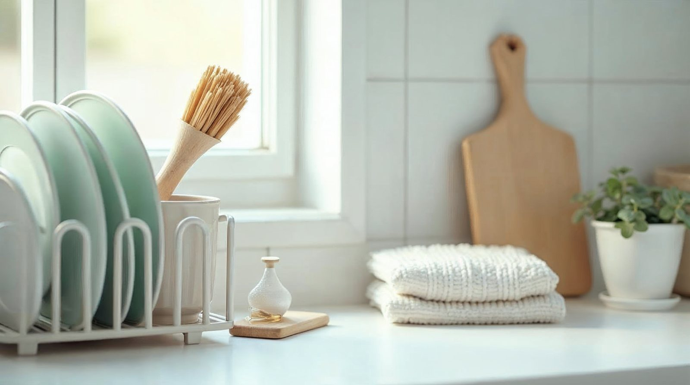
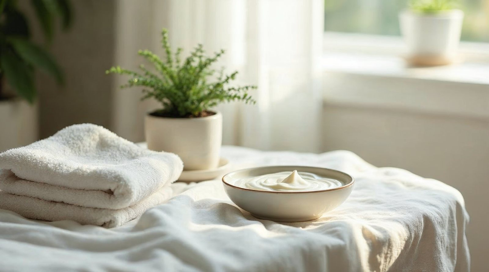
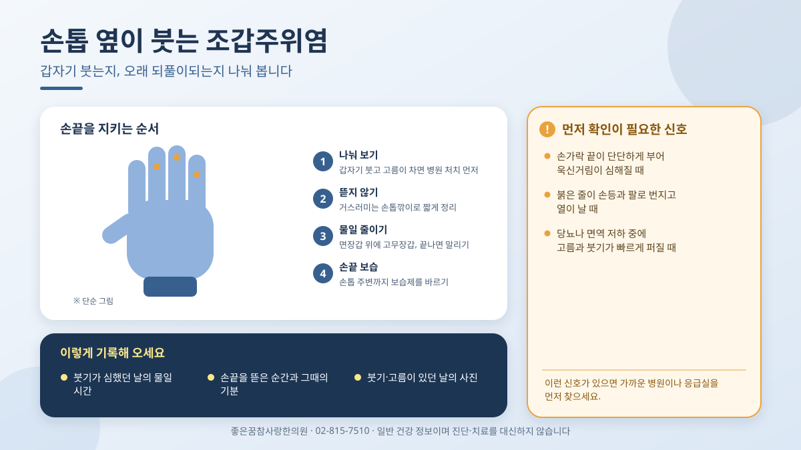

이종호 한의사 감수좋은꿈참사랑한의원 대표원장 (한의사 면허번호 19769)발행 2026-11-26 · 수정 2026-11-27
이 글의 차례
저녁 설거지를 마치고 고무장갑을 벗는데, 검지 손톱 옆이 빨갛게 부어 있어요. 며칠 전 손톱 옆 거스러미가 거슬려 무심코 잡아 뜯은 자리죠. 키보드를 칠 때마다 손끝이 욱신거리고, 밤에는 맥박이 뛸 때마다 손가락이 같이 쿵쿵 울리는 것 같습니다.
손끝은 하루에도 수없이 쓰는 곳이라, 작은 상처 하나가 생각보다 큰 불편을 만들어요. 휴대폰 화면을 누를 때, 단추를 채울 때, 머리를 감을 때마다 아픈 손가락을 피하느라 손놀림이 어색해지거든요. 진료실에서도 손을 내미시며 "이렇게 작은 걸로 와도 되나 싶었어요" 하시는 분이 계세요. 그럼요, 오셔도 돼요.
손톱 주변이 붓는 조갑주위염은 크게 두 가지 모습으로 찾아와요. 거스러미나 작은 상처로 세균이 들어가 하루 이틀 사이에 갑자기 붓는 경우가 있고, 물일이 많은 분에게 몇 주에서 몇 달씩 손톱 주변이 붓고 가라앉기를 되풀이하는 경우가 있어요. 이름은 같아도 이 둘은 다른 얘기라, 살피는 방법도 조금 달라요.
갑자기 붓고 고름이 차는 경우는 피부과나 외과 처치가 먼저예요. 반면 오래 되풀이되는 경우는 손을 쓰는 습관과 피부의 보호막, 몸의 컨디션을 함께 돌보는 일이 중요해지죠. 이 글에서는 이 둘을 나눠서 차례로 얘기해 볼게요.
조갑주위염은 어떤 상태인가요
손톱을 둘러싼 살을 손톱 주름이라고 부릅니다. 이 주름과 손톱 사이에는 큐티클이라는 얇은 막이 있어서, 바깥의 물과 세균이 손톱 뿌리 쪽으로 들어오지 못하게 막아 줍니다. 조갑주위염은 이 보호막이 무너지면서 손톱 주변 살에 염증이 생긴 상태입니다.
갑자기 생기는 경우는 대개 거스러미를 뜯거나, 큐티클을 깊이 밀어내거나, 손톱을 물어뜯어 생긴 작은 상처로 세균이 들어가 시작됩니다. 하루 이틀 사이에 손톱 옆이 붉게 붓고 열감과 욱신거림이 생기며, 며칠 지나면 노랗게 고름이 비치기도 합니다.
오래가는 경우는 물이나 세제, 식재료에 손이 자주 닿는 분에게 흔합니다. 큐티클이 떨어져 나간 틈으로 물과 자극 물질이 계속 스며들면서 손톱 주름이 늘 부어 있고, 눌렀을 때 살짝 아프며, 손톱 표면이 울퉁불퉁해지거나 색이 변하기도 합니다. 여러 손가락에 함께 생기는 일도 많습니다.
왜 손톱 주변이 자꾸 붓게 될까요
조갑주위염은 손을 쓰는 습관과 깊이 이어져 있습니다. 아래 가운데 해당하는 것이 있는지 살펴보시면 무엇부터 바꿀지가 보이기 시작합니다.
- 거스러미를 손으로 잡아 뜯거나 이로 물어뜯는 습관
- 손톱을 물어뜯거나 손가락을 빠는 습관
- 큐티클을 깊이 밀어내거나 잘라 내는 손톱 관리
- 설거지, 청소, 조리, 미용처럼 손이 하루에 여러 번 물과 세제에 닿는 일
- 손 습진이나 심한 건조로 손끝 피부가 자주 갈라지는 경우
- 당뇨가 있거나 면역을 낮추는 약을 쓰고 있는 경우
거스러미를 뜯는 일은 정말 흔합니다. 신경이 쓰여 한 번 잡아당기면 살까지 함께 찢어지면서 작은 상처가 남고, 그 틈으로 세균이 들어갑니다. 긴장하거나 생각에 잠길 때 무의식적으로 손끝을 만지작거리는 분일수록 이런 일이 잦습니다.
물일은 오래가는 조갑주위염의 가장 큰 이유입니다. 손이 젖었다 마르기를 하루에 수십 번 되풀이하면 손끝 피부가 불었다가 갈라지고, 큐티클이 제자리를 지키지 못합니다. 고무장갑을 끼더라도 장갑 안에 땀이 차거나 물이 들어가면 오히려 더 오래 젖어 있게 되기도 합니다.
비슷해 보이는 손끝의 불편
손톱 주변이 붉고 아프다고 모두 조갑주위염은 아닙니다. 비슷해 보이는 몇 가지를 나란히 놓고 보면 구분에 도움이 됩니다. 정확한 판단은 직접 보고 하는 것이니 참고로만 봐 주세요.
손끝 바닥 쪽 살이 단단하게 붓고 몹시 아프다면, 손톱 옆이 아니라 손가락 끝 안쪽에 염증이 생긴 경우일 수 있습니다. 이런 경우에는 안쪽에 고름이 갇혀 통증이 심해지기 쉬워서 병원에서 확인해 보시는 것이 좋습니다.
손톱 주변에 작은 물집이 모여 생기고 찌릿한 통증이 있다면, 바이러스로 생기는 손가락 물집일 수도 있습니다. 이 경우에는 물집을 터뜨리거나 짜면 오히려 번질 수 있어서, 함부로 건드리지 않고 병원에서 확인하는 것이 좋습니다.
손톱이 두꺼워지고 누렇게 변하며 부서진다면 손톱 무좀을 생각해 볼 수 있고, 손톱 뿌리 주변에 단단한 혹이 만져진다면 사마귀일 수도 있습니다. 손 습진은 손톱 주변만이 아니라 손가락 옆면과 손바닥까지 가렵고 갈라지는 경우가 많습니다.

손을 많이 쓰는 일과 손끝 건강
조리, 미용, 청소, 간호, 육아처럼 손을 하루 종일 물에 적시거나 소독제를 자주 쓰는 일을 하시는 분들에게 오래가는 조갑주위염이 흔합니다. 일을 줄일 수는 없으니, 일하는 방식 안에서 손끝이 쉴 틈을 만들어 주는 것이 중요합니다.
고무장갑을 끼실 때는 안에 얇은 면장갑을 한 겹 받쳐 끼면 땀이 덜 차고 장갑 안이 덜 축축해집니다. 장갑은 하나만 오래 쓰기보다 두 켤레를 번갈아 쓰며 안쪽을 뒤집어 말려 주세요. 물일이 끝나면 손을 미지근한 물로 헹군 뒤 손톱 주변까지 톡톡 두드려 말립니다.
소독제를 자주 쓰셔야 한다면, 쓰고 나서 손이 완전히 마른 뒤 보습제를 손톱 주변에 따로 한 번 더 발라 주세요. 손등이나 손바닥만 바르고 손끝은 빠뜨리는 경우가 많은데, 정작 가장 건조해지는 곳이 손톱 주름입니다.
병원 처치가 먼저 필요한 때는 언제인가요
손톱 옆이 붓기 시작한 지 하루 이틀 안이고 고름이 없다면, 손을 잘 말리고 건드리지 않으면서 지켜볼 수 있는 경우가 많습니다. 하지만 노랗게 고름이 비치거나, 욱신거림이 점점 심해지거나, 붓기가 손가락 마디 쪽으로 번진다면 병원 진료를 받으시는 것이 좋습니다.
병원에서는 상태에 따라 고름을 빼는 처치를 하거나, 먹는 약이나 바르는 약을 쓰기도 합니다. 오래 되풀이되는 경우에는 세균 말고 곰팡이나 습진이 함께 있는지를 살펴 그에 맞는 약을 쓰기도 합니다. 어떤 약이 맞는지는 직접 보고 정하는 것이니 진료에서 상의하시면 됩니다.
처치를 받으신 뒤에는 상처가 아물 때까지 안내받은 대로 소독하고, 물일은 잠시 다른 가족에게 맡기거나 장갑을 꼭 끼고 짧게 하시길 권합니다. 이 시기에 손끝을 자꾸 만지면 회복이 더뎌질 수 있어서, 반창고로 살짝 감싸 두는 것도 도움이 됩니다.
아이의 손끝은 이런 점을 더 살핍니다
아이들은 손톱을 물어뜯거나 손가락을 빠는 습관으로 조갑주위염이 생기기 쉽습니다. 침에 젖은 손끝이 마를 틈 없이 다시 입으로 들어가니 보호막이 쉽게 무너집니다. 아이에게 물어뜯지 말라고 다그치기보다, 언제 손이 입으로 가는지를 먼저 살펴봐 주세요.
심심할 때, 긴장할 때, 잠들기 전처럼 손이 입으로 가는 때가 정해져 있는 경우가 많습니다. 그 시간에 손으로 할 수 있는 놀이를 쥐여 주거나, 손톱을 짧고 매끈하게 다듬어 뜯을 거리를 줄여 주는 것이 도움이 됩니다.
먼저 이렇게 여쭙니다
처음 오시면 저는 대략 이런 순서로 여쭙니다. 미리 생각해 오시면 진료 시간을 더 알차게 쓰실 수 있습니다.
- 언제부터 부었고, 갑자기 생겼나요, 몇 주째 붓고 가라앉기를 되풀이하나요?
- 붓기 전에 거스러미를 뜯었거나 손톱 관리를 받은 일이 있었나요?
- 하루에 손을 물에 담그는 일이 얼마나 되나요? 장갑을 끼시나요?
- 손톱을 물어뜯거나 손끝을 만지작거리는 습관이 있나요?
- 손 습진이나 아토피, 건선처럼 피부 질환이 있나요?
- 당뇨가 있거나 면역을 낮추는 약, 연고를 쓰고 계신가요?
손끝을 뜯는 습관은 말씀하시기 쑥스러워하는 분이 많습니다. 그런데 이 습관을 알아야 되풀이되는 이유를 함께 찾을 수 있습니다. 혼내려는 질문이 아니니 편하게 말씀해 주세요.
일상에서 먼저 해 볼 수 있는 것
붓기가 가볍고 고름이 없는 초기라면 아래 습관을 먼저 해 보실 수 있습니다. 고름이 차거나 붓기가 빠르게 번진다면 혼자 해결하려 하지 마시고 병원 진료를 먼저 받아 주세요.
- 거스러미는 뜯지 말고 깨끗한 손톱깎이로 뿌리 쪽을 짧게 잘라 내기
- 큐티클은 밀어내거나 잘라 내지 말고 그대로 두기
- 물일을 할 때는 면장갑 위에 고무장갑을 끼고, 끝나면 손을 잘 말리기
- 손을 씻은 뒤에는 손톱 주변까지 보습제를 바르기
- 손톱을 물어뜯고 싶을 때 손에 쥘 수 있는 작은 물건을 가까이 두기
- 아픈 손가락은 되도록 물에 오래 담그지 않기
거스러미는 손이 건조할 때 잘 생깁니다. 손톱 주변을 촉촉하게 지키면 거스러미가 덜 생기고, 생기더라도 뜯고 싶은 마음이 덜합니다. 잠들기 전에 보습제를 손끝에 넉넉히 바르고 면장갑을 끼고 자는 것도 좋은 방법입니다.
손톱 관리를 받으실 때는 큐티클을 제거하지 말아 달라고 미리 말씀하시길 권합니다. 큐티클은 보기에는 거추장스러워도 손톱 뿌리를 지키는 문 역할을 합니다. 도구가 깨끗하게 관리되는지도 함께 살펴 주세요. 개인 도구를 챙겨 가시는 것도 방법입니다.
한의원에서 함께 살필 수 있는 경우
갑자기 붓고 고름이 찬 경우에는 고름을 빼거나 약을 쓰는 처치가 필요해서 피부과나 외과 진료가 먼저입니다. 한의원에서는 그와 나란히, 손끝 피부가 쉽게 무너지고 되풀이되는 바탕을 함께 살핍니다.
- 손 습진이나 건조함이 오래가 손끝이 자주 갈라지는 경우
- 긴장하거나 불안할 때 손끝을 뜯는 습관이 좀처럼 줄지 않는 경우
- 피로와 잠 부족이 이어지는 시기마다 손끝 염증이 함께 되풀이되는 경우
- 손발이 차고 손끝 혈색이 창백해 상처가 더디게 아무는 느낌이 드는 경우
- 물일이 많은 일을 하며 손목과 손가락 마디까지 함께 뻐근한 경우
좋은꿈참사랑한의원에 오시면 모든 분의 맥을 먼저 짚고, 아래 '먼저 확인이 필요한' 신호가 없는지도 함께 봅니다. 그다음 손의 온도와 피부 상태, 잠과 소화, 마음의 긴장을 함께 여쭙습니다. 손끝을 뜯는 습관이 있다면 언제 그런 마음이 드는지도 차분히 들어 봅니다.
진찰한 내용을 바탕으로 손 관리에서 바꿔 볼 것 하나와 함께 침, 한약 상담 가운데 지금 상태에 맞는 것을 정합니다. 한약을 상의할 때는 드시는 약을 모두 확인하고 신중하게 정합니다. 병원에서 처방받은 항생제나 연고는 상의 없이 멈추지 않으시도록 안내합니다.
이렇게 기록해 오시면 상담이 쉬워집니다
손끝 염증은 손을 쓰는 날과 쉬는 날에 따라 달라집니다. 2주 정도만 간단히 적어 보시면 무엇이 손끝을 지치게 하는지 보입니다.
- 붓기와 통증이 심했던 날과 그날 물일을 한 시간
- 장갑을 낀 날과 끼지 않은 날
- 거스러미를 뜯거나 손톱을 물어뜯은 순간과 그때의 기분
- 붓기, 고름, 손톱 색이 변한 날의 사진
- 잠든 시각과 피곤했던 날 표시
뜯는 습관을 적을 때는 몇 번 뜯었는지보다 어떤 상황이었는지를 적는 것이 도움이 됩니다. 회의 중이었는지, 휴대폰을 보다가였는지, 잠들기 전이었는지를 알면 그 순간을 대신할 방법을 함께 찾을 수 있습니다.

오래 편안한 손끝을 위해
오래 편안한 손끝을 위해
손끝은 하루 종일 일하는 곳이라 쉴 틈이 없어요. 그래서 작은 상처도 쉽게 덧나고, 한 번 무너진 보호막이 다시 자리 잡는 데 시간이 걸려요. 원래 그래요. 손을 덜 쓰라는 게 아니라, 쓰고 나서 잘 말려 주면 되는 거예요.
손끝이 덜 지치게 몸 쪽을 살피는 건 제가 맡을게요. 대신 하나만 부탁드려요. 물일이 끝날 때마다 손톱 주변까지 말리고 보습제를 한 번 발라 주세요. 딴 건 하시던 대로 편하게 하셔도 돼요.
서두르기보다 손끝이 젖어 있는 시간을 조금씩 줄여 가는 게 오래가는 방법이에요. 단추를 채우고, 머리를 감고, 아이 손을 잡는 일이 아무렇지 않게 느껴지는 날을 목표로 천천히 가 보시죠.
다음에 오시면 그 일주일 동안 손끝이 어땠는지부터 함께 살펴봐요. 궁금한 건 그때 편하게 물어보세요.
이런 증상은 먼저 확인이 필요합니다
- 손가락 끝이 단단하게 부어 욱신거림이 심해지거나 붉은 줄이 손등과 팔로 번지며 열이 나는 경우
- 당뇨가 있거나 면역을 낮추는 약을 쓰는 분에게 고름과 붓기가 빠르게 퍼지는 경우
이런 신호가 있으면 한의원보다 가까운 병원이나 응급실을 먼저 찾으세요.
함께 읽으면 좋은 글
- 손톱이 얇아져 잘 부러지고 끝이 겹겹이 갈라지는 약한 손톱은 무엇을 살피나요?
- 아이가 손톱을 자꾸 물어뜯을 때, 혼내기 전에 무엇을 살피고 어떻게 도와주나요?
- 손가락에 작은 물집이 잡히고 가려운 한포진은 어떻게 살피나요?
- 발뒤꿈치가 하얗게 두꺼워지고 쩍쩍 갈라지거나 손발에 각질이 쌓일 때는 어떻게 살피나요?
- 손가락과 발바닥에 오돌토돌 올라와 자꾸 번지는 사마귀는 어떻게 살피나요?

여쭙는 것
- 언제부터 부었고, 갑자기 생겼나요, 몇 주째 붓고 가라앉기를 되풀이하나요?
- 붓기 전에 거스러미를 뜯었거나 손톱 관리를 받은 일이 있었나요?
- 하루에 손을 물에 담그는 일이 얼마나 되나요? 장갑을 끼시나요?
생활에서 해 볼 것
- 거스러미는 뜯지 말고 깨끗한 손톱깎이로 뿌리 쪽을 짧게 잘라 내기
- 큐티클은 밀어내거나 잘라 내지 말고 그대로 두기
- 물일을 할 때는 면장갑 위에 고무장갑을 끼고, 끝나면 손을 잘 말리기
한의원에서 함께 살필 것
- 손 습진이나 건조함이 오래가 손끝이 자주 갈라지는 경우
- 긴장하거나 불안할 때 손끝을 뜯는 습관이 좀처럼 줄지 않는 경우
- 피로와 잠 부족이 이어지는 시기마다 손끝 염증이 함께 되풀이되는 경우
먼저 확인이 필요한 신호
- 손가락 끝이 단단하게 부어 욱신거림이 심해지거나 붉은 줄이 손등과 팔로 번지며 열이…
- 당뇨가 있거나 면역을 낮추는 약을 쓰는 분에게 고름과 붓기가 빠르게 퍼지는 경우
한눈에 보는 표
| 구분 | 핵심 |
|---|---|
| 여쭙는 것 | 언제부터 부었고, 갑자기 생겼나요, 몇 주째 붓고 가라앉기를 되풀이하나요? 붓기 전에 거스러미를 뜯었거나 손톱 관리를 받은 일이 있었나요? |
| 생활에서 해 볼 것 | 거스러미는 뜯지 말고 깨끗한 손톱깎이로 뿌리 쪽을 짧게 잘라 내기 큐티클은 밀어내거나 잘라 내지 말고 그대로 두기 |
| 한의원에서 함께 살필 것 | 손 습진이나 건조함이 오래가 손끝이 자주 갈라지는 경우 긴장하거나 불안할 때 손끝을 뜯는 습관이 좀처럼 줄지 않는 경우 |
| 먼저 확인이 필요한 신호 | 손가락 끝이 단단하게 부어 욱신거림이 심해지거나 붉은 줄이 손등과 팔로 번지며 열이 나는 경우 당뇨가 있거나 면역을 낮추는 약을 쓰는 분에게 고름과 붓기가 빠르게 퍼지는 경우 |
자주 묻는 질문
손톱 옆에 고름이 비치는데 바늘로 터뜨려도 되나요?
직접 터뜨리면 염증이 손가락 안쪽으로 번질 수 있습니다. 고름이 비치면 피부과나 외과에서 처치를 받으시는 것이 먼저입니다.
조갑주위염은 한의원에서 치료하나요?
갑자기 붓고 고름이 찬 경우는 병원 처치가 먼저입니다. 한의원에서는 손 습진과 건조함, 손끝을 뜯는 습관, 피로처럼 손끝 염증이 되풀이되기 쉬운 바탕을 함께 살핍니다.
거스러미는 어떻게 정리하면 좋나요?
손으로 뜯지 말고 깨끗한 손톱깎이로 뿌리 쪽을 짧게 잘라 내세요. 평소 손톱 주변에 보습제를 발라 두면 거스러미가 덜 생깁니다.
네일 관리를 계속 받아도 되나요?
염증이 있는 동안은 쉬시는 것이 좋습니다. 다시 받으실 때는 큐티클을 제거하지 말아 달라고 미리 말씀하시고, 도구가 깨끗한지도 살펴 주세요.
손톱 모양이 울퉁불퉁하게 변했는데 돌아오나요?
손톱 뿌리 쪽 염증이 가라앉으면 새로 자라는 손톱은 고르게 자라는 경우가 많습니다. 손톱이 다 자라 바뀌기까지는 몇 달이 걸리니 여유를 두고 지켜보시면 됩니다.
좋은꿈참사랑한의원은 재진 때 지난번 이야기부터 이어서 여쭙니다. 진료시간과 예약은 오시는 길에서 확인하세요.
어디서 상담받을 수 있나요?
좋은꿈참사랑한의원은 서울 동작구 만양로2길 2 신성빌딩 3층·5층(서울 동작구 상도동, 7호선 상도역 3번 출구 근처)에 있습니다. 한의사 3명(이종호 대표원장, 조영기 수석진료원장, 정원영 진료원장)이 진료합니다. 진료시간은 평일 09:30~20:00(점심 13:00~14:00), 토·일·공휴일 09:30~15:00이며, 방문 전 전화로 확인을 권합니다. 예약은 네이버 예약, 카카오톡 상담, 전화 02-815-7510로 받습니다.
이 글은 일반적인 건강 정보이며 개인의 진단이나 치료를 대신하지 않습니다. 증상이 있거나 복용 중인 약이 있다면 진료를 통해 확인하세요. 치료 효과는 개인마다 다를 수 있습니다.
작성 기준: 일반적으로 알려져 있는 건강 정보를 참고해 정리했습니다(대표원장 감수). 증상 기록은 1~2주 동안 하루 1회, 비슷한 시간에 적어 오시면 지난 상태와 비교하기 쉽습니다.